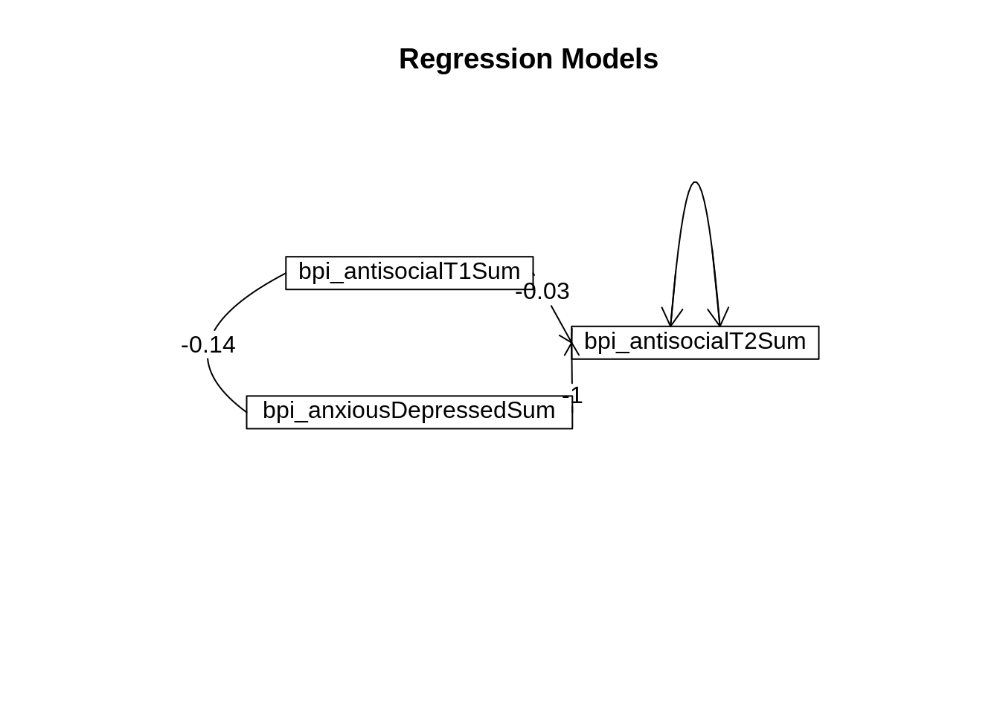

#install.packages("remotes")
#remotes::install_git("https://research-git.uiowa.edu/PetersenLab/petersenlab.git")library("psych")
library("rms")
library("robustbase")
library("brms")mydata <- read.csv("https://osf.io/8syp5/download")mydata$countVariable <- as.integer(mydata$bpi_antisocialT2Sum)
mydata$orderedVariable <- factor(mydata$countVariable, ordered = TRUE)
mydata$female <- NA
mydata$female[which(mydata$sex == "male")] <- 0
mydata$female[which(mydata$sex == "female")] <- 1multipleRegressionModel <- lm(bpi_antisocialT2Sum ~ bpi_antisocialT1Sum + bpi_anxiousDepressedSum,
data = mydata,
na.action = na.exclude)
multipleRegressionModelNoMissing <- lm(bpi_antisocialT2Sum ~ bpi_antisocialT1Sum + bpi_anxiousDepressedSum,
data = mydata,
na.action = na.omit)
summary(multipleRegressionModel)
Call:
lm(formula = bpi_antisocialT2Sum ~ bpi_antisocialT1Sum + bpi_anxiousDepressedSum,
data = mydata, na.action = na.exclude)
Residuals:
Min 1Q Median 3Q Max
-8.3755 -1.2337 -0.2212 0.9911 12.8017
Coefficients:
Estimate Std. Error t value Pr(>|t|)
(Intercept) 1.19830 0.05983 20.029 < 2e-16 ***
bpi_antisocialT1Sum 0.46553 0.01858 25.049 < 2e-16 ***
bpi_anxiousDepressedSum 0.16075 0.02916 5.513 3.83e-08 ***
---
Signif. codes: 0 '***' 0.001 '**' 0.01 '*' 0.05 '.' 0.1 ' ' 1
Residual standard error: 1.979 on 2871 degrees of freedom
(8656 observations deleted due to missingness)
Multiple R-squared: 0.262, Adjusted R-squared: 0.2615
F-statistic: 509.6 on 2 and 2871 DF, p-value: < 2.2e-16confint(multipleRegressionModel) 2.5 % 97.5 %
(Intercept) 1.0809881 1.3156128
bpi_antisocialT1Sum 0.4290884 0.5019688
bpi_anxiousDepressedSum 0.1035825 0.2179258multipleRegressionModelPairwise <- setCor(y = "bpi_antisocialT2Sum",
x = c("bpi_antisocialT1Sum","bpi_anxiousDepressedSum"),
data = cov(mydata[,c("bpi_antisocialT2Sum","bpi_antisocialT1Sum","bpi_anxiousDepressedSum")], use = "pairwise.complete.obs"),
n.obs = nrow(mydata))Warning in sqrt(diag(resid) * (n.obs - 1)/(df)): NaNs producedWarning in sqrt(MSE[i] * diag(x.inv)): NaNs producedWarning in qt(1 - alpha/2, df): NaNs produced
Warning in qt(1 - alpha/2, df): NaNs producedWarning in pf(F, k, df, log.p = TRUE): NaNs produced
summary(multipleRegressionModelPairwise)
Multiple Regression from raw data
setCor(y = "bpi_antisocialT2Sum", x = c("bpi_antisocialT1Sum",
"bpi_anxiousDepressedSum"), data = cov(mydata[, c("bpi_antisocialT2Sum",
"bpi_antisocialT1Sum", "bpi_anxiousDepressedSum")], use = "pairwise.complete.obs"),
n.obs = nrow(mydata))
Multiple Regression from matrix input
Beta weights
bpi_antisocialT2Sum
(Intercept) 0.000
bpi_antisocialT1Sum -0.031
bpi_anxiousDepressedSum -1.004
Multiple R
bpi_antisocialT2Sum
1
Multiple R2
bpi_antisocialT2Sum
1
Cohen's set correlation R2
[1] 1
Squared Canonical Correlations
NULLmultipleRegressionModelPairwise[c("coefficients","se","Probability","R2","shrunkenR2")]$coefficients
bpi_antisocialT2Sum
(Intercept) 0.0000000
bpi_antisocialT1Sum -0.0311043
bpi_anxiousDepressedSum -1.0040177
$se
bpi_antisocialT2Sum
(Intercept) NaN
bpi_antisocialT1Sum NaN
bpi_anxiousDepressedSum NaN
$Probability
bpi_antisocialT2Sum
(Intercept) NaN
bpi_antisocialT1Sum NaN
bpi_anxiousDepressedSum NaN
$R2
bpi_antisocialT2Sum
1
$shrunkenR2
bpi_antisocialT2Sum
Inf rmsMultipleRegressionModel <- robcov(ols(bpi_antisocialT2Sum ~ bpi_antisocialT1Sum + bpi_anxiousDepressedSum,
data = mydata,
x = TRUE,
y = TRUE))
rmsMultipleRegressionModelFrequencies of Missing Values Due to Each Variable
bpi_antisocialT2Sum bpi_antisocialT1Sum bpi_anxiousDepressedSum
7501 7613 7616
Linear Regression Model
ols(formula = bpi_antisocialT2Sum ~ bpi_antisocialT1Sum + bpi_anxiousDepressedSum,
data = mydata, x = TRUE, y = TRUE)
Model Likelihood Discrimination
Ratio Test Indexes
Obs 2874 LR chi2 873.09 R2 0.262
sigma1.9786 d.f. 2 R2 adj 0.261
d.f. 2871 Pr(> chi2) 0.0000 g 1.278
Residuals
Min 1Q Median 3Q Max
-8.3755 -1.2337 -0.2212 0.9911 12.8017
Coef S.E. t Pr(>|t|)
Intercept 1.1983 0.0622 19.26 <0.0001
bpi_antisocialT1Sum 0.4655 0.0229 20.30 <0.0001
bpi_anxiousDepressedSum 0.1608 0.0330 4.87 <0.0001
confint(rmsMultipleRegressionModel) 2.5 % 97.5 %
Intercept 1.07631713 1.3202837
bpi_antisocialT1Sum 0.42056957 0.5104877
bpi_anxiousDepressedSum 0.09606644 0.2254418robustLinearRegression <- lmrob(bpi_antisocialT2Sum ~ bpi_antisocialT1Sum + bpi_anxiousDepressedSum,
data = mydata,
na.action = na.exclude)
summary(robustLinearRegression)
Call:
lmrob(formula = bpi_antisocialT2Sum ~ bpi_antisocialT1Sum + bpi_anxiousDepressedSum,
data = mydata, na.action = na.exclude)
\--> method = "MM"
Residuals:
Min 1Q Median 3Q Max
-8.43518 -1.06680 -0.06707 1.14090 13.05599
Coefficients:
Estimate Std. Error t value Pr(>|t|)
(Intercept) 0.94401 0.05406 17.464 < 2e-16 ***
bpi_antisocialT1Sum 0.49135 0.02237 21.966 < 2e-16 ***
bpi_anxiousDepressedSum 0.15766 0.03102 5.083 3.96e-07 ***
---
Signif. codes: 0 '***' 0.001 '**' 0.01 '*' 0.05 '.' 0.1 ' ' 1
Robust residual standard error: 1.628
(8656 observations deleted due to missingness)
Multiple R-squared: 0.326, Adjusted R-squared: 0.3255
Convergence in 14 IRWLS iterations
Robustness weights:
12 observations c(52,347,354,517,709,766,768,979,1618,2402,2403,2404)
are outliers with |weight| = 0 ( < 3.5e-05);
283 weights are ~= 1. The remaining 2579 ones are summarized as
Min. 1st Qu. Median Mean 3rd Qu. Max.
0.0001311 0.8599000 0.9470000 0.8814000 0.9816000 0.9990000
Algorithmic parameters:
tuning.chi bb tuning.psi refine.tol
1.548e+00 5.000e-01 4.685e+00 1.000e-07
rel.tol scale.tol solve.tol eps.outlier
1.000e-07 1.000e-10 1.000e-07 3.479e-05
eps.x warn.limit.reject warn.limit.meanrw
2.365e-11 5.000e-01 5.000e-01
nResample max.it best.r.s k.fast.s k.max
500 50 2 1 200
maxit.scale trace.lev mts compute.rd fast.s.large.n
200 0 1000 0 2000
psi subsampling cov
"bisquare" "nonsingular" ".vcov.avar1"
compute.outlier.stats
"SM"
seed : int(0) confint(robustLinearRegression) 2.5 % 97.5 %
(Intercept) 0.83801565 1.0499981
bpi_antisocialT1Sum 0.44749135 0.5352118
bpi_anxiousDepressedSum 0.09683728 0.2184779ltsRegression <- ltsReg(bpi_antisocialT2Sum ~ bpi_antisocialT1Sum + bpi_anxiousDepressedSum,
data = mydata,
na.action = na.exclude)
summary(ltsRegression)
Call:
ltsReg.formula(formula = bpi_antisocialT2Sum ~ bpi_antisocialT1Sum +
bpi_anxiousDepressedSum, data = mydata, na.action = na.exclude)
Residuals (from reweighted LS):
Min 1Q Median 3Q Max
-3.8356 -0.8714 0.0000 1.0275 3.9358
Coefficients:
Estimate Std. Error t value Pr(>|t|)
Intercept 0.76093 0.04804 15.838 < 2e-16 ***
bpi_antisocialT1Sum 0.55054 0.01527 36.061 < 2e-16 ***
bpi_anxiousDepressedSum 0.11045 0.02346 4.708 2.63e-06 ***
---
Signif. codes: 0 '***' 0.001 '**' 0.01 '*' 0.05 '.' 0.1 ' ' 1
Residual standard error: 1.537 on 2711 degrees of freedom
Multiple R-Squared: 0.4082, Adjusted R-squared: 0.4077
F-statistic: 934.9 on 2 and 2711 DF, p-value: < 2.2e-16 bayesianRegularizedRegression <- brm(bpi_antisocialT2Sum ~ bpi_antisocialT1Sum + bpi_anxiousDepressedSum,
data = mydata,
chains = 4,
iter = 2000,
seed = 52242)Warning: Rows containing NAs were excluded from the model.Compiling Stan program...Start sampling
SAMPLING FOR MODEL 'anon_model' NOW (CHAIN 1).
Chain 1:
Chain 1: Gradient evaluation took 2.2e-05 seconds
Chain 1: 1000 transitions using 10 leapfrog steps per transition would take 0.22 seconds.
Chain 1: Adjust your expectations accordingly!
Chain 1:
Chain 1:
Chain 1: Iteration: 1 / 2000 [ 0%] (Warmup)
Chain 1: Iteration: 200 / 2000 [ 10%] (Warmup)
Chain 1: Iteration: 400 / 2000 [ 20%] (Warmup)
Chain 1: Iteration: 600 / 2000 [ 30%] (Warmup)
Chain 1: Iteration: 800 / 2000 [ 40%] (Warmup)
Chain 1: Iteration: 1000 / 2000 [ 50%] (Warmup)
Chain 1: Iteration: 1001 / 2000 [ 50%] (Sampling)
Chain 1: Iteration: 1200 / 2000 [ 60%] (Sampling)
Chain 1: Iteration: 1400 / 2000 [ 70%] (Sampling)
Chain 1: Iteration: 1600 / 2000 [ 80%] (Sampling)
Chain 1: Iteration: 1800 / 2000 [ 90%] (Sampling)
Chain 1: Iteration: 2000 / 2000 [100%] (Sampling)
Chain 1:
Chain 1: Elapsed Time: 0.094 seconds (Warm-up)
Chain 1: 0.089 seconds (Sampling)
Chain 1: 0.183 seconds (Total)
Chain 1:
SAMPLING FOR MODEL 'anon_model' NOW (CHAIN 2).
Chain 2:
Chain 2: Gradient evaluation took 1.6e-05 seconds
Chain 2: 1000 transitions using 10 leapfrog steps per transition would take 0.16 seconds.
Chain 2: Adjust your expectations accordingly!
Chain 2:
Chain 2:
Chain 2: Iteration: 1 / 2000 [ 0%] (Warmup)
Chain 2: Iteration: 200 / 2000 [ 10%] (Warmup)
Chain 2: Iteration: 400 / 2000 [ 20%] (Warmup)
Chain 2: Iteration: 600 / 2000 [ 30%] (Warmup)
Chain 2: Iteration: 800 / 2000 [ 40%] (Warmup)
Chain 2: Iteration: 1000 / 2000 [ 50%] (Warmup)
Chain 2: Iteration: 1001 / 2000 [ 50%] (Sampling)
Chain 2: Iteration: 1200 / 2000 [ 60%] (Sampling)
Chain 2: Iteration: 1400 / 2000 [ 70%] (Sampling)
Chain 2: Iteration: 1600 / 2000 [ 80%] (Sampling)
Chain 2: Iteration: 1800 / 2000 [ 90%] (Sampling)
Chain 2: Iteration: 2000 / 2000 [100%] (Sampling)
Chain 2:
Chain 2: Elapsed Time: 0.093 seconds (Warm-up)
Chain 2: 0.085 seconds (Sampling)
Chain 2: 0.178 seconds (Total)
Chain 2:
SAMPLING FOR MODEL 'anon_model' NOW (CHAIN 3).
Chain 3:
Chain 3: Gradient evaluation took 1.5e-05 seconds
Chain 3: 1000 transitions using 10 leapfrog steps per transition would take 0.15 seconds.
Chain 3: Adjust your expectations accordingly!
Chain 3:
Chain 3:
Chain 3: Iteration: 1 / 2000 [ 0%] (Warmup)
Chain 3: Iteration: 200 / 2000 [ 10%] (Warmup)
Chain 3: Iteration: 400 / 2000 [ 20%] (Warmup)
Chain 3: Iteration: 600 / 2000 [ 30%] (Warmup)
Chain 3: Iteration: 800 / 2000 [ 40%] (Warmup)
Chain 3: Iteration: 1000 / 2000 [ 50%] (Warmup)
Chain 3: Iteration: 1001 / 2000 [ 50%] (Sampling)
Chain 3: Iteration: 1200 / 2000 [ 60%] (Sampling)
Chain 3: Iteration: 1400 / 2000 [ 70%] (Sampling)
Chain 3: Iteration: 1600 / 2000 [ 80%] (Sampling)
Chain 3: Iteration: 1800 / 2000 [ 90%] (Sampling)
Chain 3: Iteration: 2000 / 2000 [100%] (Sampling)
Chain 3:
Chain 3: Elapsed Time: 0.093 seconds (Warm-up)
Chain 3: 0.088 seconds (Sampling)
Chain 3: 0.181 seconds (Total)
Chain 3:
SAMPLING FOR MODEL 'anon_model' NOW (CHAIN 4).
Chain 4:
Chain 4: Gradient evaluation took 1.5e-05 seconds
Chain 4: 1000 transitions using 10 leapfrog steps per transition would take 0.15 seconds.
Chain 4: Adjust your expectations accordingly!
Chain 4:
Chain 4:
Chain 4: Iteration: 1 / 2000 [ 0%] (Warmup)
Chain 4: Iteration: 200 / 2000 [ 10%] (Warmup)
Chain 4: Iteration: 400 / 2000 [ 20%] (Warmup)
Chain 4: Iteration: 600 / 2000 [ 30%] (Warmup)
Chain 4: Iteration: 800 / 2000 [ 40%] (Warmup)
Chain 4: Iteration: 1000 / 2000 [ 50%] (Warmup)
Chain 4: Iteration: 1001 / 2000 [ 50%] (Sampling)
Chain 4: Iteration: 1200 / 2000 [ 60%] (Sampling)
Chain 4: Iteration: 1400 / 2000 [ 70%] (Sampling)
Chain 4: Iteration: 1600 / 2000 [ 80%] (Sampling)
Chain 4: Iteration: 1800 / 2000 [ 90%] (Sampling)
Chain 4: Iteration: 2000 / 2000 [100%] (Sampling)
Chain 4:
Chain 4: Elapsed Time: 0.097 seconds (Warm-up)
Chain 4: 0.099 seconds (Sampling)
Chain 4: 0.196 seconds (Total)
Chain 4: summary(bayesianRegularizedRegression) Family: gaussian
Links: mu = identity; sigma = identity
Formula: bpi_antisocialT2Sum ~ bpi_antisocialT1Sum + bpi_anxiousDepressedSum
Data: mydata (Number of observations: 2874)
Draws: 4 chains, each with iter = 2000; warmup = 1000; thin = 1;
total post-warmup draws = 4000
Population-Level Effects:
Estimate Est.Error l-95% CI u-95% CI Rhat Bulk_ESS
Intercept 1.20 0.06 1.09 1.31 1.00 4628
bpi_antisocialT1Sum 0.47 0.02 0.43 0.50 1.00 3493
bpi_anxiousDepressedSum 0.16 0.03 0.10 0.22 1.00 3476
Tail_ESS
Intercept 3534
bpi_antisocialT1Sum 2895
bpi_anxiousDepressedSum 3086
Family Specific Parameters:
Estimate Est.Error l-95% CI u-95% CI Rhat Bulk_ESS Tail_ESS
sigma 1.98 0.03 1.93 2.03 1.00 4163 2897
Draws were sampled using sampling(NUTS). For each parameter, Bulk_ESS
and Tail_ESS are effective sample size measures, and Rhat is the potential
scale reduction factor on split chains (at convergence, Rhat = 1).In this example, we predict a count variable that has a poisson distribution. We could change the distribution.
generalizedRegressionModel <- glm(countVariable ~ bpi_antisocialT1Sum + bpi_anxiousDepressedSum,
data = mydata,
family = "poisson",
na.action = na.exclude)
summary(generalizedRegressionModel)
Call:
glm(formula = countVariable ~ bpi_antisocialT1Sum + bpi_anxiousDepressedSum,
family = "poisson", data = mydata, na.action = na.exclude)
Deviance Residuals:
Min 1Q Median 3Q Max
-5.2767 -0.9731 -0.1403 0.5939 6.0151
Coefficients:
Estimate Std. Error z value Pr(>|z|)
(Intercept) 0.459999 0.019650 23.410 < 2e-16 ***
bpi_antisocialT1Sum 0.141577 0.004891 28.948 < 2e-16 ***
bpi_anxiousDepressedSum 0.047567 0.008036 5.919 3.23e-09 ***
---
Signif. codes: 0 '***' 0.001 '**' 0.01 '*' 0.05 '.' 0.1 ' ' 1
(Dispersion parameter for poisson family taken to be 1)
Null deviance: 5849.4 on 2873 degrees of freedom
Residual deviance: 4562.6 on 2871 degrees of freedom
(8656 observations deleted due to missingness)
AIC: 11482
Number of Fisher Scoring iterations: 5confint(generalizedRegressionModel)Waiting for profiling to be done... 2.5 % 97.5 %
(Intercept) 0.42136094 0.49838751
bpi_antisocialT1Sum 0.13196544 0.15113708
bpi_anxiousDepressedSum 0.03177425 0.06327445In this example, we predict a count variable that has a poisson distribution. We could change the distribution.
rmsGeneralizedRegressionModel <- Glm(countVariable ~ bpi_antisocialT1Sum + bpi_anxiousDepressedSum,
data = mydata,
x = TRUE,
y = TRUE,
family = "poisson")
rmsGeneralizedRegressionModelFrequencies of Missing Values Due to Each Variable
countVariable bpi_antisocialT1Sum bpi_anxiousDepressedSum
7501 7613 7616
General Linear Model
Glm(formula = countVariable ~ bpi_antisocialT1Sum + bpi_anxiousDepressedSum,
family = "poisson", data = mydata, x = TRUE, y = TRUE)
Model Likelihood
Ratio Test
Obs 2874 LR chi2 1286.72
Residual d.f.2871 d.f. 2
g 0.3873236 Pr(> chi2) <0.0001
Coef S.E. Wald Z Pr(>|Z|)
Intercept 0.4600 0.0196 23.41 <0.0001
bpi_antisocialT1Sum 0.1416 0.0049 28.95 <0.0001
bpi_anxiousDepressedSum 0.0476 0.0080 5.92 <0.0001
confint(rmsGeneralizedRegressionModel)Waiting for profiling to be done...Error in summary.rms(fitted): adjustment values not defined here or with datadist for bpi_antisocialT1Sum bpi_anxiousDepressedSumIn this example, we predict a count variable that has a poisson distribution. We could change the distribution. For example, we could use Gamma regression, family = Gamma, when the response variable is continuous and positive, and the coefficient of variation–rather than the variance–is constant.
bayesianGeneralizedLinearRegression <- brm(countVariable ~ bpi_antisocialT1Sum + bpi_anxiousDepressedSum,
data = mydata,
family = poisson,
chains = 4,
seed = 52242,
iter = 2000)Warning: Rows containing NAs were excluded from the model.Compiling Stan program...Start sampling
SAMPLING FOR MODEL 'anon_model' NOW (CHAIN 1).
Chain 1:
Chain 1: Gradient evaluation took 0.000135 seconds
Chain 1: 1000 transitions using 10 leapfrog steps per transition would take 1.35 seconds.
Chain 1: Adjust your expectations accordingly!
Chain 1:
Chain 1:
Chain 1: Iteration: 1 / 2000 [ 0%] (Warmup)
Chain 1: Iteration: 200 / 2000 [ 10%] (Warmup)
Chain 1: Iteration: 400 / 2000 [ 20%] (Warmup)
Chain 1: Iteration: 600 / 2000 [ 30%] (Warmup)
Chain 1: Iteration: 800 / 2000 [ 40%] (Warmup)
Chain 1: Iteration: 1000 / 2000 [ 50%] (Warmup)
Chain 1: Iteration: 1001 / 2000 [ 50%] (Sampling)
Chain 1: Iteration: 1200 / 2000 [ 60%] (Sampling)
Chain 1: Iteration: 1400 / 2000 [ 70%] (Sampling)
Chain 1: Iteration: 1600 / 2000 [ 80%] (Sampling)
Chain 1: Iteration: 1800 / 2000 [ 90%] (Sampling)
Chain 1: Iteration: 2000 / 2000 [100%] (Sampling)
Chain 1:
Chain 1: Elapsed Time: 0.986 seconds (Warm-up)
Chain 1: 0.869 seconds (Sampling)
Chain 1: 1.855 seconds (Total)
Chain 1:
SAMPLING FOR MODEL 'anon_model' NOW (CHAIN 2).
Chain 2:
Chain 2: Gradient evaluation took 0.000136 seconds
Chain 2: 1000 transitions using 10 leapfrog steps per transition would take 1.36 seconds.
Chain 2: Adjust your expectations accordingly!
Chain 2:
Chain 2:
Chain 2: Iteration: 1 / 2000 [ 0%] (Warmup)
Chain 2: Iteration: 200 / 2000 [ 10%] (Warmup)
Chain 2: Iteration: 400 / 2000 [ 20%] (Warmup)
Chain 2: Iteration: 600 / 2000 [ 30%] (Warmup)
Chain 2: Iteration: 800 / 2000 [ 40%] (Warmup)
Chain 2: Iteration: 1000 / 2000 [ 50%] (Warmup)
Chain 2: Iteration: 1001 / 2000 [ 50%] (Sampling)
Chain 2: Iteration: 1200 / 2000 [ 60%] (Sampling)
Chain 2: Iteration: 1400 / 2000 [ 70%] (Sampling)
Chain 2: Iteration: 1600 / 2000 [ 80%] (Sampling)
Chain 2: Iteration: 1800 / 2000 [ 90%] (Sampling)
Chain 2: Iteration: 2000 / 2000 [100%] (Sampling)
Chain 2:
Chain 2: Elapsed Time: 1.001 seconds (Warm-up)
Chain 2: 0.864 seconds (Sampling)
Chain 2: 1.865 seconds (Total)
Chain 2:
SAMPLING FOR MODEL 'anon_model' NOW (CHAIN 3).
Chain 3:
Chain 3: Gradient evaluation took 0.00013 seconds
Chain 3: 1000 transitions using 10 leapfrog steps per transition would take 1.3 seconds.
Chain 3: Adjust your expectations accordingly!
Chain 3:
Chain 3:
Chain 3: Iteration: 1 / 2000 [ 0%] (Warmup)
Chain 3: Iteration: 200 / 2000 [ 10%] (Warmup)
Chain 3: Iteration: 400 / 2000 [ 20%] (Warmup)
Chain 3: Iteration: 600 / 2000 [ 30%] (Warmup)
Chain 3: Iteration: 800 / 2000 [ 40%] (Warmup)
Chain 3: Iteration: 1000 / 2000 [ 50%] (Warmup)
Chain 3: Iteration: 1001 / 2000 [ 50%] (Sampling)
Chain 3: Iteration: 1200 / 2000 [ 60%] (Sampling)
Chain 3: Iteration: 1400 / 2000 [ 70%] (Sampling)
Chain 3: Iteration: 1600 / 2000 [ 80%] (Sampling)
Chain 3: Iteration: 1800 / 2000 [ 90%] (Sampling)
Chain 3: Iteration: 2000 / 2000 [100%] (Sampling)
Chain 3:
Chain 3: Elapsed Time: 0.895 seconds (Warm-up)
Chain 3: 0.861 seconds (Sampling)
Chain 3: 1.756 seconds (Total)
Chain 3:
SAMPLING FOR MODEL 'anon_model' NOW (CHAIN 4).
Chain 4:
Chain 4: Gradient evaluation took 0.000121 seconds
Chain 4: 1000 transitions using 10 leapfrog steps per transition would take 1.21 seconds.
Chain 4: Adjust your expectations accordingly!
Chain 4:
Chain 4:
Chain 4: Iteration: 1 / 2000 [ 0%] (Warmup)
Chain 4: Iteration: 200 / 2000 [ 10%] (Warmup)
Chain 4: Iteration: 400 / 2000 [ 20%] (Warmup)
Chain 4: Iteration: 600 / 2000 [ 30%] (Warmup)
Chain 4: Iteration: 800 / 2000 [ 40%] (Warmup)
Chain 4: Iteration: 1000 / 2000 [ 50%] (Warmup)
Chain 4: Iteration: 1001 / 2000 [ 50%] (Sampling)
Chain 4: Iteration: 1200 / 2000 [ 60%] (Sampling)
Chain 4: Iteration: 1400 / 2000 [ 70%] (Sampling)
Chain 4: Iteration: 1600 / 2000 [ 80%] (Sampling)
Chain 4: Iteration: 1800 / 2000 [ 90%] (Sampling)
Chain 4: Iteration: 2000 / 2000 [100%] (Sampling)
Chain 4:
Chain 4: Elapsed Time: 0.953 seconds (Warm-up)
Chain 4: 0.791 seconds (Sampling)
Chain 4: 1.744 seconds (Total)
Chain 4: summary(bayesianGeneralizedLinearRegression) Family: poisson
Links: mu = log
Formula: countVariable ~ bpi_antisocialT1Sum + bpi_anxiousDepressedSum
Data: mydata (Number of observations: 2874)
Draws: 4 chains, each with iter = 2000; warmup = 1000; thin = 1;
total post-warmup draws = 4000
Population-Level Effects:
Estimate Est.Error l-95% CI u-95% CI Rhat Bulk_ESS
Intercept 0.46 0.02 0.42 0.50 1.00 3053
bpi_antisocialT1Sum 0.14 0.00 0.13 0.15 1.00 2791
bpi_anxiousDepressedSum 0.05 0.01 0.03 0.06 1.00 2532
Tail_ESS
Intercept 2974
bpi_antisocialT1Sum 2579
bpi_anxiousDepressedSum 2575
Draws were sampled using sampling(NUTS). For each parameter, Bulk_ESS
and Tail_ESS are effective sample size measures, and Rhat is the potential
scale reduction factor on split chains (at convergence, Rhat = 1).robustGeneralizedRegression <- glmrob(countVariable ~ bpi_antisocialT1Sum + bpi_anxiousDepressedSum,
data = mydata,
family = "poisson",
na.action = na.exclude)
summary(robustGeneralizedRegression)
Call: glmrob(formula = countVariable ~ bpi_antisocialT1Sum + bpi_anxiousDepressedSum, family = "poisson", data = mydata, na.action = na.exclude)
Coefficients:
Estimate Std. Error z value Pr(>|z|)
(Intercept) 0.365934 0.020794 17.598 < 2e-16 ***
bpi_antisocialT1Sum 0.156275 0.005046 30.969 < 2e-16 ***
bpi_anxiousDepressedSum 0.050526 0.008332 6.064 1.32e-09 ***
---
Signif. codes: 0 '***' 0.001 '**' 0.01 '*' 0.05 '.' 0.1 ' ' 1
Robustness weights w.r * w.x:
2273 weights are ~= 1. The remaining 601 ones are summarized as
Min. 1st Qu. Median Mean 3rd Qu. Max.
0.1286 0.5550 0.7574 0.7183 0.8874 0.9982
Number of observations: 2874
Fitted by method 'Mqle' (in 5 iterations)
(Dispersion parameter for poisson family taken to be 1)
No deviance values available
Algorithmic parameters:
acc tcc
0.0001 1.3450
maxit
50
test.acc
"coef" confint(robustGeneralizedRegression)Waiting for profiling to be done...Error in glm.control(acc = 1e-04, test.acc = "coef", maxit = 50, tcc = 1.345): unused arguments (acc = 1e-04, test.acc = "coef", tcc = 1.345)ordinalRegressionModel <- robcov(orm(orderedVariable ~ bpi_antisocialT1Sum + bpi_anxiousDepressedSum,
data = mydata,
x = TRUE,
y = TRUE))
ordinalRegressionModelFrequencies of Missing Values Due to Each Variable
orderedVariable bpi_antisocialT1Sum bpi_anxiousDepressedSum
7501 7613 7616
Logistic (Proportional Odds) Ordinal Regression Model
orm(formula = orderedVariable ~ bpi_antisocialT1Sum + bpi_anxiousDepressedSum,
data = mydata, x = TRUE, y = TRUE)
Frequencies of Responses
0 1 2 3 4 5 6 7 8 9 10 11 12 14
455 597 527 444 313 205 133 80 52 33 16 9 6 4
Model Likelihood Discrimination Rank Discrim.
Ratio Test Indexes Indexes
Obs 2874 LR chi2 881.26 R2 0.268 rho 0.506
Distinct Y 14 d.f. 2 R2(2,2874) 0.264
Median Y 3 Pr(> chi2) <0.0001 R2(2,2803.4) 0.269
max |deriv| 6e-06 Score chi2 916.79 |Pr(Y>=median)-0.5| 0.188
Pr(> chi2) <0.0001
Coef S.E. Wald Z Pr(>|Z|)
bpi_antisocialT1Sum 0.4404 0.0208 21.16 <0.0001
bpi_anxiousDepressedSum 0.1427 0.0266 5.36 <0.0001
confint(ordinalRegressionModel) 2.5 % 97.5 %
y>=1 NA NA
y>=2 -0.79571122 -0.5575596
y>=3 NA NA
y>=4 NA NA
y>=5 NA NA
y>=6 NA NA
y>=7 NA NA
y>=8 NA NA
y>=9 NA NA
y>=10 NA NA
y>=11 NA NA
y>=12 NA NA
y>=14 NA NA
bpi_antisocialT1Sum 0.39961501 0.4811892
bpi_anxiousDepressedSum 0.09053245 0.1948370bayesianOrdinalRegression <- brm(orderedVariable ~ bpi_antisocialT1Sum + bpi_anxiousDepressedSum,
data = mydata,
family = cumulative(),
chains = 4,
seed = 52242,
iter = 2000)Warning: Rows containing NAs were excluded from the model.Compiling Stan program...Start sampling
SAMPLING FOR MODEL 'anon_model' NOW (CHAIN 1).
Chain 1:
Chain 1: Gradient evaluation took 0.002239 seconds
Chain 1: 1000 transitions using 10 leapfrog steps per transition would take 22.39 seconds.
Chain 1: Adjust your expectations accordingly!
Chain 1:
Chain 1:
Chain 1: Iteration: 1 / 2000 [ 0%] (Warmup)
Chain 1: Iteration: 200 / 2000 [ 10%] (Warmup)
Chain 1: Iteration: 400 / 2000 [ 20%] (Warmup)
Chain 1: Iteration: 600 / 2000 [ 30%] (Warmup)
Chain 1: Iteration: 800 / 2000 [ 40%] (Warmup)
Chain 1: Iteration: 1000 / 2000 [ 50%] (Warmup)
Chain 1: Iteration: 1001 / 2000 [ 50%] (Sampling)
Chain 1: Iteration: 1200 / 2000 [ 60%] (Sampling)
Chain 1: Iteration: 1400 / 2000 [ 70%] (Sampling)
Chain 1: Iteration: 1600 / 2000 [ 80%] (Sampling)
Chain 1: Iteration: 1800 / 2000 [ 90%] (Sampling)
Chain 1: Iteration: 2000 / 2000 [100%] (Sampling)
Chain 1:
Chain 1: Elapsed Time: 33.415 seconds (Warm-up)
Chain 1: 27.381 seconds (Sampling)
Chain 1: 60.796 seconds (Total)
Chain 1:
SAMPLING FOR MODEL 'anon_model' NOW (CHAIN 2).
Chain 2:
Chain 2: Gradient evaluation took 0.00181 seconds
Chain 2: 1000 transitions using 10 leapfrog steps per transition would take 18.1 seconds.
Chain 2: Adjust your expectations accordingly!
Chain 2:
Chain 2:
Chain 2: Iteration: 1 / 2000 [ 0%] (Warmup)
Chain 2: Iteration: 200 / 2000 [ 10%] (Warmup)
Chain 2: Iteration: 400 / 2000 [ 20%] (Warmup)
Chain 2: Iteration: 600 / 2000 [ 30%] (Warmup)
Chain 2: Iteration: 800 / 2000 [ 40%] (Warmup)
Chain 2: Iteration: 1000 / 2000 [ 50%] (Warmup)
Chain 2: Iteration: 1001 / 2000 [ 50%] (Sampling)
Chain 2: Iteration: 1200 / 2000 [ 60%] (Sampling)
Chain 2: Iteration: 1400 / 2000 [ 70%] (Sampling)
Chain 2: Iteration: 1600 / 2000 [ 80%] (Sampling)
Chain 2: Iteration: 1800 / 2000 [ 90%] (Sampling)
Chain 2: Iteration: 2000 / 2000 [100%] (Sampling)
Chain 2:
Chain 2: Elapsed Time: 28.87 seconds (Warm-up)
Chain 2: 20.952 seconds (Sampling)
Chain 2: 49.822 seconds (Total)
Chain 2:
SAMPLING FOR MODEL 'anon_model' NOW (CHAIN 3).
Chain 3:
Chain 3: Gradient evaluation took 0.002112 seconds
Chain 3: 1000 transitions using 10 leapfrog steps per transition would take 21.12 seconds.
Chain 3: Adjust your expectations accordingly!
Chain 3:
Chain 3:
Chain 3: Iteration: 1 / 2000 [ 0%] (Warmup)
Chain 3: Iteration: 200 / 2000 [ 10%] (Warmup)
Chain 3: Iteration: 400 / 2000 [ 20%] (Warmup)
Chain 3: Iteration: 600 / 2000 [ 30%] (Warmup)
Chain 3: Iteration: 800 / 2000 [ 40%] (Warmup)
Chain 3: Iteration: 1000 / 2000 [ 50%] (Warmup)
Chain 3: Iteration: 1001 / 2000 [ 50%] (Sampling)
Chain 3: Iteration: 1200 / 2000 [ 60%] (Sampling)
Chain 3: Iteration: 1400 / 2000 [ 70%] (Sampling)
Chain 3: Iteration: 1600 / 2000 [ 80%] (Sampling)
Chain 3: Iteration: 1800 / 2000 [ 90%] (Sampling)
Chain 3: Iteration: 2000 / 2000 [100%] (Sampling)
Chain 3:
Chain 3: Elapsed Time: 32.051 seconds (Warm-up)
Chain 3: 22.838 seconds (Sampling)
Chain 3: 54.889 seconds (Total)
Chain 3:
SAMPLING FOR MODEL 'anon_model' NOW (CHAIN 4).
Chain 4:
Chain 4: Gradient evaluation took 0.002112 seconds
Chain 4: 1000 transitions using 10 leapfrog steps per transition would take 21.12 seconds.
Chain 4: Adjust your expectations accordingly!
Chain 4:
Chain 4:
Chain 4: Iteration: 1 / 2000 [ 0%] (Warmup)
Chain 4: Iteration: 200 / 2000 [ 10%] (Warmup)
Chain 4: Iteration: 400 / 2000 [ 20%] (Warmup)
Chain 4: Iteration: 600 / 2000 [ 30%] (Warmup)
Chain 4: Iteration: 800 / 2000 [ 40%] (Warmup)
Chain 4: Iteration: 1000 / 2000 [ 50%] (Warmup)
Chain 4: Iteration: 1001 / 2000 [ 50%] (Sampling)
Chain 4: Iteration: 1200 / 2000 [ 60%] (Sampling)
Chain 4: Iteration: 1400 / 2000 [ 70%] (Sampling)
Chain 4: Iteration: 1600 / 2000 [ 80%] (Sampling)
Chain 4: Iteration: 1800 / 2000 [ 90%] (Sampling)
Chain 4: Iteration: 2000 / 2000 [100%] (Sampling)
Chain 4:
Chain 4: Elapsed Time: 31.061 seconds (Warm-up)
Chain 4: 27.726 seconds (Sampling)
Chain 4: 58.787 seconds (Total)
Chain 4: summary(bayesianOrdinalRegression) Family: cumulative
Links: mu = logit; disc = identity
Formula: orderedVariable ~ bpi_antisocialT1Sum + bpi_anxiousDepressedSum
Data: mydata (Number of observations: 2874)
Draws: 4 chains, each with iter = 2000; warmup = 1000; thin = 1;
total post-warmup draws = 4000
Population-Level Effects:
Estimate Est.Error l-95% CI u-95% CI Rhat Bulk_ESS
Intercept[1] -0.60 0.06 -0.73 -0.48 1.00 4626
Intercept[2] 0.67 0.06 0.56 0.78 1.00 5687
Intercept[3] 1.57 0.06 1.45 1.70 1.00 4939
Intercept[4] 2.40 0.07 2.26 2.54 1.00 4633
Intercept[5] 3.15 0.08 2.99 3.31 1.00 4346
Intercept[6] 3.84 0.09 3.66 4.03 1.00 4524
Intercept[7] 4.52 0.11 4.31 4.74 1.00 4638
Intercept[8] 5.15 0.13 4.90 5.41 1.00 4695
Intercept[9] 5.79 0.15 5.50 6.10 1.00 4710
Intercept[10] 6.51 0.19 6.16 6.90 1.00 5155
Intercept[11] 7.17 0.24 6.70 7.66 1.00 5239
Intercept[12] 7.87 0.33 7.25 8.56 1.00 5835
Intercept[13] 8.91 0.53 8.02 10.03 1.00 6030
bpi_antisocialT1Sum 0.44 0.02 0.40 0.48 1.00 3936
bpi_anxiousDepressedSum 0.14 0.03 0.09 0.19 1.00 4692
Tail_ESS
Intercept[1] 3275
Intercept[2] 3236
Intercept[3] 3579
Intercept[4] 3633
Intercept[5] 3310
Intercept[6] 3649
Intercept[7] 3355
Intercept[8] 3295
Intercept[9] 3341
Intercept[10] 3020
Intercept[11] 3106
Intercept[12] 3455
Intercept[13] 3399
bpi_antisocialT1Sum 3142
bpi_anxiousDepressedSum 3548
Family Specific Parameters:
Estimate Est.Error l-95% CI u-95% CI Rhat Bulk_ESS Tail_ESS
disc 1.00 0.00 1.00 1.00 NA NA NA
Draws were sampled using sampling(NUTS). For each parameter, Bulk_ESS
and Tail_ESS are effective sample size measures, and Rhat is the potential
scale reduction factor on split chains (at convergence, Rhat = 1).bayesianCountRegression <- brm(countVariable ~ bpi_antisocialT1Sum + bpi_anxiousDepressedSum,
data = mydata,
family = "poisson",
chains = 4,
seed = 52242,
iter = 2000)Warning: Rows containing NAs were excluded from the model.Compiling Stan program...Start sampling
SAMPLING FOR MODEL 'anon_model' NOW (CHAIN 1).
Chain 1:
Chain 1: Gradient evaluation took 0.000125 seconds
Chain 1: 1000 transitions using 10 leapfrog steps per transition would take 1.25 seconds.
Chain 1: Adjust your expectations accordingly!
Chain 1:
Chain 1:
Chain 1: Iteration: 1 / 2000 [ 0%] (Warmup)
Chain 1: Iteration: 200 / 2000 [ 10%] (Warmup)
Chain 1: Iteration: 400 / 2000 [ 20%] (Warmup)
Chain 1: Iteration: 600 / 2000 [ 30%] (Warmup)
Chain 1: Iteration: 800 / 2000 [ 40%] (Warmup)
Chain 1: Iteration: 1000 / 2000 [ 50%] (Warmup)
Chain 1: Iteration: 1001 / 2000 [ 50%] (Sampling)
Chain 1: Iteration: 1200 / 2000 [ 60%] (Sampling)
Chain 1: Iteration: 1400 / 2000 [ 70%] (Sampling)
Chain 1: Iteration: 1600 / 2000 [ 80%] (Sampling)
Chain 1: Iteration: 1800 / 2000 [ 90%] (Sampling)
Chain 1: Iteration: 2000 / 2000 [100%] (Sampling)
Chain 1:
Chain 1: Elapsed Time: 0.926 seconds (Warm-up)
Chain 1: 0.802 seconds (Sampling)
Chain 1: 1.728 seconds (Total)
Chain 1:
SAMPLING FOR MODEL 'anon_model' NOW (CHAIN 2).
Chain 2:
Chain 2: Gradient evaluation took 0.000123 seconds
Chain 2: 1000 transitions using 10 leapfrog steps per transition would take 1.23 seconds.
Chain 2: Adjust your expectations accordingly!
Chain 2:
Chain 2:
Chain 2: Iteration: 1 / 2000 [ 0%] (Warmup)
Chain 2: Iteration: 200 / 2000 [ 10%] (Warmup)
Chain 2: Iteration: 400 / 2000 [ 20%] (Warmup)
Chain 2: Iteration: 600 / 2000 [ 30%] (Warmup)
Chain 2: Iteration: 800 / 2000 [ 40%] (Warmup)
Chain 2: Iteration: 1000 / 2000 [ 50%] (Warmup)
Chain 2: Iteration: 1001 / 2000 [ 50%] (Sampling)
Chain 2: Iteration: 1200 / 2000 [ 60%] (Sampling)
Chain 2: Iteration: 1400 / 2000 [ 70%] (Sampling)
Chain 2: Iteration: 1600 / 2000 [ 80%] (Sampling)
Chain 2: Iteration: 1800 / 2000 [ 90%] (Sampling)
Chain 2: Iteration: 2000 / 2000 [100%] (Sampling)
Chain 2:
Chain 2: Elapsed Time: 0.976 seconds (Warm-up)
Chain 2: 0.824 seconds (Sampling)
Chain 2: 1.8 seconds (Total)
Chain 2:
SAMPLING FOR MODEL 'anon_model' NOW (CHAIN 3).
Chain 3:
Chain 3: Gradient evaluation took 0.000122 seconds
Chain 3: 1000 transitions using 10 leapfrog steps per transition would take 1.22 seconds.
Chain 3: Adjust your expectations accordingly!
Chain 3:
Chain 3:
Chain 3: Iteration: 1 / 2000 [ 0%] (Warmup)
Chain 3: Iteration: 200 / 2000 [ 10%] (Warmup)
Chain 3: Iteration: 400 / 2000 [ 20%] (Warmup)
Chain 3: Iteration: 600 / 2000 [ 30%] (Warmup)
Chain 3: Iteration: 800 / 2000 [ 40%] (Warmup)
Chain 3: Iteration: 1000 / 2000 [ 50%] (Warmup)
Chain 3: Iteration: 1001 / 2000 [ 50%] (Sampling)
Chain 3: Iteration: 1200 / 2000 [ 60%] (Sampling)
Chain 3: Iteration: 1400 / 2000 [ 70%] (Sampling)
Chain 3: Iteration: 1600 / 2000 [ 80%] (Sampling)
Chain 3: Iteration: 1800 / 2000 [ 90%] (Sampling)
Chain 3: Iteration: 2000 / 2000 [100%] (Sampling)
Chain 3:
Chain 3: Elapsed Time: 0.901 seconds (Warm-up)
Chain 3: 0.864 seconds (Sampling)
Chain 3: 1.765 seconds (Total)
Chain 3:
SAMPLING FOR MODEL 'anon_model' NOW (CHAIN 4).
Chain 4:
Chain 4: Gradient evaluation took 0.000129 seconds
Chain 4: 1000 transitions using 10 leapfrog steps per transition would take 1.29 seconds.
Chain 4: Adjust your expectations accordingly!
Chain 4:
Chain 4:
Chain 4: Iteration: 1 / 2000 [ 0%] (Warmup)
Chain 4: Iteration: 200 / 2000 [ 10%] (Warmup)
Chain 4: Iteration: 400 / 2000 [ 20%] (Warmup)
Chain 4: Iteration: 600 / 2000 [ 30%] (Warmup)
Chain 4: Iteration: 800 / 2000 [ 40%] (Warmup)
Chain 4: Iteration: 1000 / 2000 [ 50%] (Warmup)
Chain 4: Iteration: 1001 / 2000 [ 50%] (Sampling)
Chain 4: Iteration: 1200 / 2000 [ 60%] (Sampling)
Chain 4: Iteration: 1400 / 2000 [ 70%] (Sampling)
Chain 4: Iteration: 1600 / 2000 [ 80%] (Sampling)
Chain 4: Iteration: 1800 / 2000 [ 90%] (Sampling)
Chain 4: Iteration: 2000 / 2000 [100%] (Sampling)
Chain 4:
Chain 4: Elapsed Time: 0.949 seconds (Warm-up)
Chain 4: 0.827 seconds (Sampling)
Chain 4: 1.776 seconds (Total)
Chain 4: summary(bayesianCountRegression) Family: poisson
Links: mu = log
Formula: countVariable ~ bpi_antisocialT1Sum + bpi_anxiousDepressedSum
Data: mydata (Number of observations: 2874)
Draws: 4 chains, each with iter = 2000; warmup = 1000; thin = 1;
total post-warmup draws = 4000
Population-Level Effects:
Estimate Est.Error l-95% CI u-95% CI Rhat Bulk_ESS
Intercept 0.46 0.02 0.42 0.50 1.00 3053
bpi_antisocialT1Sum 0.14 0.00 0.13 0.15 1.00 2791
bpi_anxiousDepressedSum 0.05 0.01 0.03 0.06 1.00 2532
Tail_ESS
Intercept 2974
bpi_antisocialT1Sum 2579
bpi_anxiousDepressedSum 2575
Draws were sampled using sampling(NUTS). For each parameter, Bulk_ESS
and Tail_ESS are effective sample size measures, and Rhat is the potential
scale reduction factor on split chains (at convergence, Rhat = 1).logisticRegressionModel <- robcov(lrm(female ~ bpi_antisocialT1Sum + bpi_anxiousDepressedSum,
data = mydata,
x = TRUE,
y = TRUE))
logisticRegressionModelFrequencies of Missing Values Due to Each Variable
female bpi_antisocialT1Sum bpi_anxiousDepressedSum
2 7613 7616
Logistic Regression Model
lrm(formula = female ~ bpi_antisocialT1Sum + bpi_anxiousDepressedSum,
data = mydata, x = TRUE, y = TRUE)
Model Likelihood Discrimination Rank Discrim.
Ratio Test Indexes Indexes
Obs 3914 LR chi2 66.63 R2 0.023 C 0.571
0 1965 d.f. 2 R2(2,3914)0.016 Dxy 0.142
1 1949 Pr(> chi2) <0.0001 R2(2,2935.5)0.022 gamma 0.147
max |deriv| 1e-12 Brier 0.246 tau-a 0.071
Coef S.E. Wald Z Pr(>|Z|)
Intercept 0.3002 0.0529 5.67 <0.0001
bpi_antisocialT1Sum -0.1244 0.0166 -7.48 <0.0001
bpi_anxiousDepressedSum 0.0382 0.0253 1.51 0.1314
confint(logisticRegressionModel)Waiting for profiling to be done...Error in summary.rms(fitted): adjustment values not defined here or with datadist for bpi_antisocialT1Sum bpi_anxiousDepressedSumbayesianLogisticRegression <- brm(female ~ bpi_antisocialT1Sum + bpi_anxiousDepressedSum,
data = mydata,
family = bernoulli,
chains = 4,
seed = 52242,
iter = 2000)Warning: Rows containing NAs were excluded from the model.Compiling Stan program...Start sampling
SAMPLING FOR MODEL 'anon_model' NOW (CHAIN 1).
Chain 1:
Chain 1: Gradient evaluation took 0.000148 seconds
Chain 1: 1000 transitions using 10 leapfrog steps per transition would take 1.48 seconds.
Chain 1: Adjust your expectations accordingly!
Chain 1:
Chain 1:
Chain 1: Iteration: 1 / 2000 [ 0%] (Warmup)
Chain 1: Iteration: 200 / 2000 [ 10%] (Warmup)
Chain 1: Iteration: 400 / 2000 [ 20%] (Warmup)
Chain 1: Iteration: 600 / 2000 [ 30%] (Warmup)
Chain 1: Iteration: 800 / 2000 [ 40%] (Warmup)
Chain 1: Iteration: 1000 / 2000 [ 50%] (Warmup)
Chain 1: Iteration: 1001 / 2000 [ 50%] (Sampling)
Chain 1: Iteration: 1200 / 2000 [ 60%] (Sampling)
Chain 1: Iteration: 1400 / 2000 [ 70%] (Sampling)
Chain 1: Iteration: 1600 / 2000 [ 80%] (Sampling)
Chain 1: Iteration: 1800 / 2000 [ 90%] (Sampling)
Chain 1: Iteration: 2000 / 2000 [100%] (Sampling)
Chain 1:
Chain 1: Elapsed Time: 0.878 seconds (Warm-up)
Chain 1: 0.932 seconds (Sampling)
Chain 1: 1.81 seconds (Total)
Chain 1:
SAMPLING FOR MODEL 'anon_model' NOW (CHAIN 2).
Chain 2:
Chain 2: Gradient evaluation took 0.000135 seconds
Chain 2: 1000 transitions using 10 leapfrog steps per transition would take 1.35 seconds.
Chain 2: Adjust your expectations accordingly!
Chain 2:
Chain 2:
Chain 2: Iteration: 1 / 2000 [ 0%] (Warmup)
Chain 2: Iteration: 200 / 2000 [ 10%] (Warmup)
Chain 2: Iteration: 400 / 2000 [ 20%] (Warmup)
Chain 2: Iteration: 600 / 2000 [ 30%] (Warmup)
Chain 2: Iteration: 800 / 2000 [ 40%] (Warmup)
Chain 2: Iteration: 1000 / 2000 [ 50%] (Warmup)
Chain 2: Iteration: 1001 / 2000 [ 50%] (Sampling)
Chain 2: Iteration: 1200 / 2000 [ 60%] (Sampling)
Chain 2: Iteration: 1400 / 2000 [ 70%] (Sampling)
Chain 2: Iteration: 1600 / 2000 [ 80%] (Sampling)
Chain 2: Iteration: 1800 / 2000 [ 90%] (Sampling)
Chain 2: Iteration: 2000 / 2000 [100%] (Sampling)
Chain 2:
Chain 2: Elapsed Time: 0.914 seconds (Warm-up)
Chain 2: 0.914 seconds (Sampling)
Chain 2: 1.828 seconds (Total)
Chain 2:
SAMPLING FOR MODEL 'anon_model' NOW (CHAIN 3).
Chain 3:
Chain 3: Gradient evaluation took 0.000138 seconds
Chain 3: 1000 transitions using 10 leapfrog steps per transition would take 1.38 seconds.
Chain 3: Adjust your expectations accordingly!
Chain 3:
Chain 3:
Chain 3: Iteration: 1 / 2000 [ 0%] (Warmup)
Chain 3: Iteration: 200 / 2000 [ 10%] (Warmup)
Chain 3: Iteration: 400 / 2000 [ 20%] (Warmup)
Chain 3: Iteration: 600 / 2000 [ 30%] (Warmup)
Chain 3: Iteration: 800 / 2000 [ 40%] (Warmup)
Chain 3: Iteration: 1000 / 2000 [ 50%] (Warmup)
Chain 3: Iteration: 1001 / 2000 [ 50%] (Sampling)
Chain 3: Iteration: 1200 / 2000 [ 60%] (Sampling)
Chain 3: Iteration: 1400 / 2000 [ 70%] (Sampling)
Chain 3: Iteration: 1600 / 2000 [ 80%] (Sampling)
Chain 3: Iteration: 1800 / 2000 [ 90%] (Sampling)
Chain 3: Iteration: 2000 / 2000 [100%] (Sampling)
Chain 3:
Chain 3: Elapsed Time: 0.866 seconds (Warm-up)
Chain 3: 0.791 seconds (Sampling)
Chain 3: 1.657 seconds (Total)
Chain 3:
SAMPLING FOR MODEL 'anon_model' NOW (CHAIN 4).
Chain 4:
Chain 4: Gradient evaluation took 0.000137 seconds
Chain 4: 1000 transitions using 10 leapfrog steps per transition would take 1.37 seconds.
Chain 4: Adjust your expectations accordingly!
Chain 4:
Chain 4:
Chain 4: Iteration: 1 / 2000 [ 0%] (Warmup)
Chain 4: Iteration: 200 / 2000 [ 10%] (Warmup)
Chain 4: Iteration: 400 / 2000 [ 20%] (Warmup)
Chain 4: Iteration: 600 / 2000 [ 30%] (Warmup)
Chain 4: Iteration: 800 / 2000 [ 40%] (Warmup)
Chain 4: Iteration: 1000 / 2000 [ 50%] (Warmup)
Chain 4: Iteration: 1001 / 2000 [ 50%] (Sampling)
Chain 4: Iteration: 1200 / 2000 [ 60%] (Sampling)
Chain 4: Iteration: 1400 / 2000 [ 70%] (Sampling)
Chain 4: Iteration: 1600 / 2000 [ 80%] (Sampling)
Chain 4: Iteration: 1800 / 2000 [ 90%] (Sampling)
Chain 4: Iteration: 2000 / 2000 [100%] (Sampling)
Chain 4:
Chain 4: Elapsed Time: 0.883 seconds (Warm-up)
Chain 4: 0.947 seconds (Sampling)
Chain 4: 1.83 seconds (Total)
Chain 4: summary(bayesianLogisticRegression) Family: bernoulli
Links: mu = logit
Formula: female ~ bpi_antisocialT1Sum + bpi_anxiousDepressedSum
Data: mydata (Number of observations: 3914)
Draws: 4 chains, each with iter = 2000; warmup = 1000; thin = 1;
total post-warmup draws = 4000
Population-Level Effects:
Estimate Est.Error l-95% CI u-95% CI Rhat Bulk_ESS
Intercept 0.30 0.05 0.20 0.41 1.00 3975
bpi_antisocialT1Sum -0.13 0.02 -0.16 -0.09 1.00 2967
bpi_anxiousDepressedSum 0.04 0.03 -0.01 0.09 1.00 3115
Tail_ESS
Intercept 3063
bpi_antisocialT1Sum 2794
bpi_anxiousDepressedSum 2947
Draws were sampled using sampling(NUTS). For each parameter, Bulk_ESS
and Tail_ESS are effective sample size measures, and Rhat is the potential
scale reduction factor on split chains (at convergence, Rhat = 1).mcar_test() function of the njtierney/naniar packageCheck for nonlinearities (non-horizontal line) in plots of: - Residuals versus fitted values (Residual Plots) — best - Residuals versus predictors (Residual Plots) - Outcome versus fitted values (Marginal Model Plots) - Outcome versus predictors, ignoring other predictors (Marginal Model Plots) - Outcome versus predictors, controlling for other predictors (Added-Variable Plots)
Exogeneity means that the association between predictors and outcome is fully causal and unrelated to other variables.
Homoscedasticity of the residuals means that the variance of the residuals does not differ as a function of the outcome/predictors (i.e., the residuals show constant variance as a function of outcome/predictors).
bptest() function from lmtest packagelm() functioncoeftest() function from the sandwich package along with hccm sandwich estimates from the car packagerobcov() function from the rms packageIndependent errors means that the errors are uncorrelated with each other.
robcov() from rms packageMulticollinearity occurs when the predictors are correlated with each other.
lmrob()/glmrob() function of robustbase packagerlm(, method = "MM") function of MASS package: http://www.ats.ucla.edu/stat/r/dae/rreg.htmltsReg() function of robustbase package (best)mblm(, repeated = FALSE) function of mblm packagecor(, method = "spearman")rq() function of quantreg packageBook: An R Companion to Applied Regression
http://people.duke.edu/~rnau/testing.htm
http://www.statmethods.net/stats/rdiagnostics.html
http://socserv.socsci.mcmaster.ca/jfox/Courses/Brazil-2009/index.html
https://en.wikipedia.org/wiki/Ordinary_least_squares#Assumptions
sessionInfo()R version 4.2.0 (2022-04-22)
Platform: x86_64-pc-linux-gnu (64-bit)
Running under: Ubuntu 20.04.4 LTS
Matrix products: default
BLAS: /usr/lib/x86_64-linux-gnu/blas/libblas.so.3.9.0
LAPACK: /usr/lib/x86_64-linux-gnu/lapack/liblapack.so.3.9.0
locale:
[1] LC_CTYPE=C.UTF-8 LC_NUMERIC=C LC_TIME=C.UTF-8
[4] LC_COLLATE=C.UTF-8 LC_MONETARY=C.UTF-8 LC_MESSAGES=C.UTF-8
[7] LC_PAPER=C.UTF-8 LC_NAME=C LC_ADDRESS=C
[10] LC_TELEPHONE=C LC_MEASUREMENT=C.UTF-8 LC_IDENTIFICATION=C
attached base packages:
[1] stats graphics grDevices utils datasets methods base
other attached packages:
[1] brms_2.17.0 Rcpp_1.0.8.3 robustbase_0.95-0 rms_6.3-0
[5] SparseM_1.81 Hmisc_4.7-0 ggplot2_3.3.6 Formula_1.2-4
[9] survival_3.3-1 lattice_0.20-45 psych_2.2.5
loaded via a namespace (and not attached):
[1] backports_1.4.1 plyr_1.8.7 igraph_1.3.1
[4] splines_4.2.0 crosstalk_1.2.0 TH.data_1.1-1
[7] rstantools_2.2.0 inline_0.3.19 digest_0.6.29
[10] htmltools_0.5.2 fansi_1.0.3 magrittr_2.0.3
[13] checkmate_2.1.0 cluster_2.1.3 RcppParallel_5.1.5
[16] matrixStats_0.62.0 xts_0.12.1 sandwich_3.0-1
[19] prettyunits_1.1.1 jpeg_0.1-9 colorspace_2.0-3
[22] xfun_0.31 dplyr_1.0.9 callr_3.7.0
[25] crayon_1.5.1 jsonlite_1.8.0 zoo_1.8-10
[28] glue_1.6.2 gtable_0.3.0 MatrixModels_0.5-0
[31] V8_4.2.0 distributional_0.3.0 pkgbuild_1.3.1
[34] rstan_2.26.11 DEoptimR_1.0-11 abind_1.4-5
[37] scales_1.2.0 mvtnorm_1.1-3 DBI_1.1.2
[40] miniUI_0.1.1.1 xtable_1.8-4 htmlTable_2.4.0
[43] foreign_0.8-82 stats4_4.2.0 StanHeaders_2.26.11
[46] DT_0.23 htmlwidgets_1.5.4 threejs_0.3.3
[49] RColorBrewer_1.1-3 posterior_1.2.2 ellipsis_0.3.2
[52] pkgconfig_2.0.3 loo_2.5.1 farver_2.1.0
[55] nnet_7.3-17 sass_0.4.1 utf8_1.2.2
[58] tidyselect_1.1.2 rlang_1.0.2 reshape2_1.4.4
[61] later_1.3.0 munsell_0.5.0 tools_4.2.0
[64] cli_3.3.0 generics_0.1.2 ggridges_0.5.3
[67] evaluate_0.15 stringr_1.4.0 fastmap_1.1.0
[70] yaml_2.3.5 processx_3.6.0 knitr_1.39
[73] purrr_0.3.4 nlme_3.1-157 mime_0.12
[76] quantreg_5.93 compiler_4.2.0 bayesplot_1.9.0
[79] shinythemes_1.2.0 rstudioapi_0.13 curl_4.3.2
[82] png_0.1-7 tibble_3.1.7 bslib_0.3.1
[85] stringi_1.7.6 highr_0.9 ps_1.7.0
[88] Brobdingnag_1.2-7 Matrix_1.4-1 markdown_1.1
[91] shinyjs_2.1.0 tensorA_0.36.2 vctrs_0.4.1
[94] pillar_1.7.0 lifecycle_1.0.1 jquerylib_0.1.4
[97] bridgesampling_1.1-2 data.table_1.14.2 httpuv_1.6.5
[100] R6_2.5.1 latticeExtra_0.6-29 promises_1.2.0.1
[103] gridExtra_2.3 codetools_0.2-18 polspline_1.1.20
[106] colourpicker_1.1.1 MASS_7.3-56 gtools_3.9.2.1
[109] assertthat_0.2.1 withr_2.5.0 shinystan_2.6.0
[112] mnormt_2.1.0 multcomp_1.4-19 parallel_4.2.0
[115] grid_4.2.0 rpart_4.1.16 coda_0.19-4
[118] rmarkdown_2.14 shiny_1.7.1 base64enc_0.1-3
[121] dygraphs_1.1.1.6